Les outils Aventurier
Ce que vous avez sous les yeux, zone par zone.
La fiche
La colonne de gauche, c'est la carte d'identité de votre aventurier. Elle se lit de haut en bas, dans l'ordre où on en a besoin pendant une partie.
Personnage. Le rond, c'est le portrait : cliquez dessus pour choisir une image sur votre appareil, puis recadrez-la en la faisant glisser. Le nom se tape directement sur la ligne, et la race se choisit dans la liste. La race compte : elle apporte un trait (une petite bulle « ADN » apparaît autour du corps), qui peut modifier vos statistiques.
Statistiques. Six cercles : Force, Résistance, Charisme, Savoir, Dextérité et Perception. Le grand chiffre est le nombre de dés que vous lancez vraiment. Il tient déjà compte de tout ce qui vous gêne : une fracture divise la statistique par deux, une armure lourde peut retirer un dé (un petit bouclier le signale alors sur le cercle). Si le chiffre est rouge, c'est qu'un malus s'applique. Le petit dé sous le chiffre lance le jet.
Décompte. Six compteurs qui bougent pendant la partie :
- Points de Vie (le cœur) : maximum = Résistance + 5. Sous 5, vous êtes « pas top top » et le seuil de réussite monte d'un cran. À 0, vous êtes étourdi ; à −1, hors jeu.
- Points de Charge : ce que vous pouvez porter. Chaque objet du sac pèse ; au-delà, plus rien ne rentre.
- Points d'Action : combien de choses vous pouvez faire dans un tour, calculés depuis la Dextérité.
- Points d'Armure : la somme des protections que vous portez.
- Points de Tourment : tous les 10, chaque statistique perd un point. On les gagne quand le scénario devient dur à vivre.
- Points d'Éveil : à 10, le cadran s'allume.
Les boutons − et + sous les compteurs servent en cours de partie : un coup reçu, une potion bue, un moment de terreur.
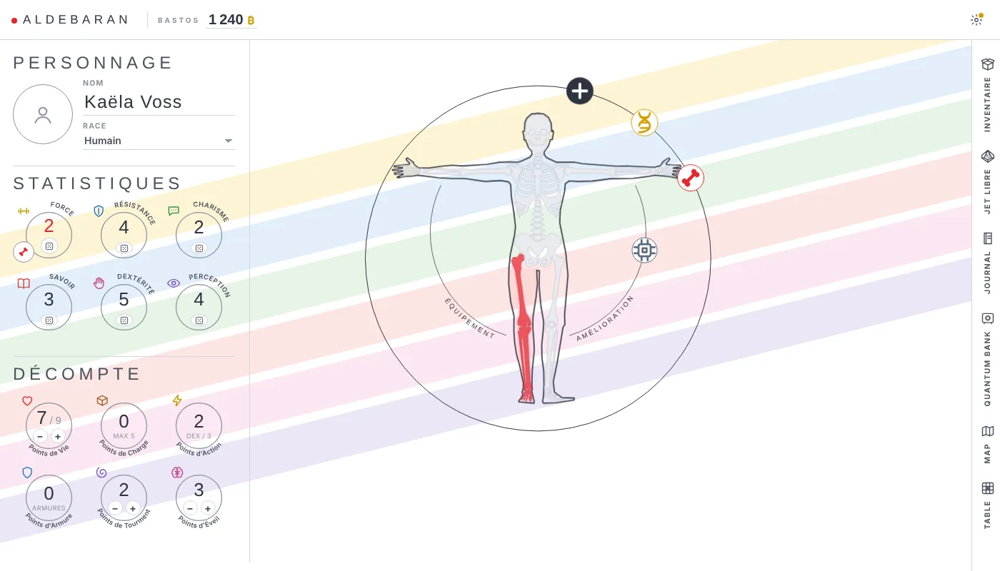
Tout en haut, le compteur de Bastos (la monnaie d'Aldebaran) : un clic pour gagner ou dépenser, ou pour mettre de l'argent à l'abri dans la Quantum Bank.
Le corps
La silhouette au centre n'est pas là pour décorer : elle réagit au clic.
Les fractures. Un clic sur une partie du corps la casse, un second clic la soigne. Six zones, chacune liée à une statistique : la tête à la Perception, le torse à la Résistance, chaque bras à la Dextérité, chaque jambe à la Force. Tant que la zone est cassée, ses os passent au rouge et la statistique est divisée par deux. Deux fractures sur la même statistique (les deux jambes, par exemple) ne la divisent qu'une fois : on n'est pas plus lent avec deux jambes cassées qu'avec une, on est juste très malheureux.
Les arcs. Le grand cercle porte deux arcs. À gauche, Équipement : les icônes de ce que vous tenez en main et portez sur vous. À droite, Amélioration : la cybernétique implantée, les mutations, les particularités. Un clic sur une icône ouvre sa fiche : la zone du corps, les dés, la description, et un bouton Utiliser quand l'objet s'utilise (une seringue, un médikit).
Les effets. Le gros + en haut du cercle ajoute un effet : un bonus temporaire, un malus, un état (empoisonné, aveuglé…). Chaque effet devient une petite bulle qui tourne lentement autour du personnage. Passez dessus : les bulles s'arrêtent et une infobulle explique l'effet, avec Modifier et Retirer. Les fractures et le trait de race y apparaissent aussi.
L'inventaire
Le bord droit de l'écran porte une colonne d'onglets : Inventaire, Jet libre, Journal, Quantum Bank, Map et Table. Chacun ouvre un volet ; un seul à la fois, et un clic sur l'onglet actif le referme.
L'Inventaire liste tout ce que vous transportez. En haut, la charge utilisée sur la charge maximale (par exemple 3 / 5 PC). Chaque ligne montre la statistique utilisée par l'objet, le bonus de dés, le seuil de réussite, son poids, et pour une arme, ses dégâts.
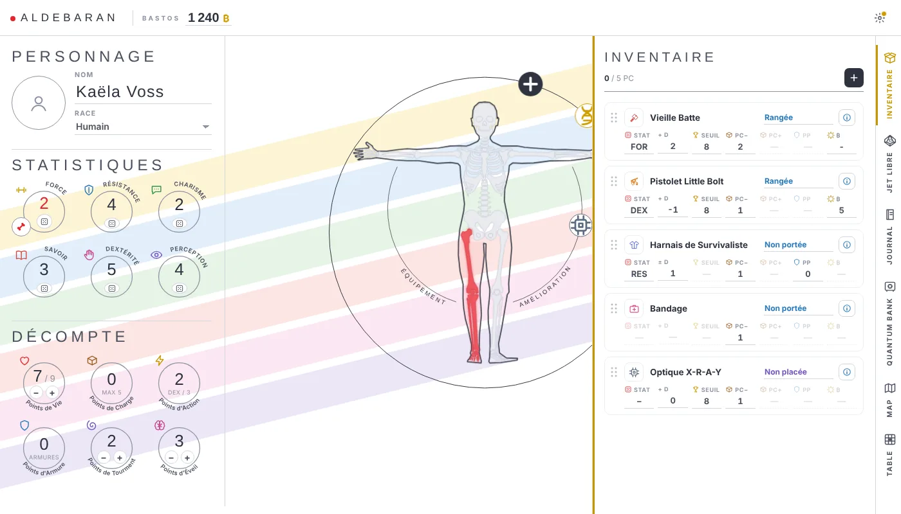
Ajouter un objet. Le bouton + propose deux chemins. Le Catalogue contient près de 200 objets prêts à l'emploi, du couteau rouillé au fusil à plasma : on cherche, on clique, c'est dans le sac. Créer un objet ouvre une fiche vierge pour inventer le vôtre : arme, armure, soin, sac, cybernétique, mutation ou particularité, avec sa statistique, ses dés et son poids. Tout ce que vous créez rejoint le catalogue, et vous le retrouverez pour vos autres personnages.
Équiper. L'étiquette bleue de chaque ligne (« Rangée », « Non portée »…) choisit où va l'objet : main gauche, main droite, les deux mains, le corps. Une arme à deux mains occupe les deux poings : impossible d'en tenir une autre. Ce qui est équipé apparaît en icône sur l'arc Équipement.
Les petits gestes. Le (i) au bout d'une ligne déplie la description. Pour se débarrasser d'un objet, on le glisse sur le + du haut, qui devient une poubelle (l'objet reste au catalogue). Pendant ce glisser, une icône de coffre apparaît à côté : lâchez-y l'objet pour le mettre à la Quantum Bank, où il ne pèse plus rien.
Les dés
Aldebaran se joue avec une poignée de dés à dix faces. On lance autant de dés que la statistique, et chaque dé qui atteint le seuil (8 par défaut) compte comme une réussite. Un 10 est un critique, un 1 un échec critique. Plus vous avez de réussites, mieux ça se passe ; c'est le maître du destin qui dit combien il en faut.
Le plus simple : cliquez sur le petit dé d'une statistique. Le bon nombre de dés part tout seul, avec les malus déjà comptés, et le résultat s'affiche en grand avec les dés réussis en vert et les échecs critiques en rouge. « Relancer » refait le même jet.
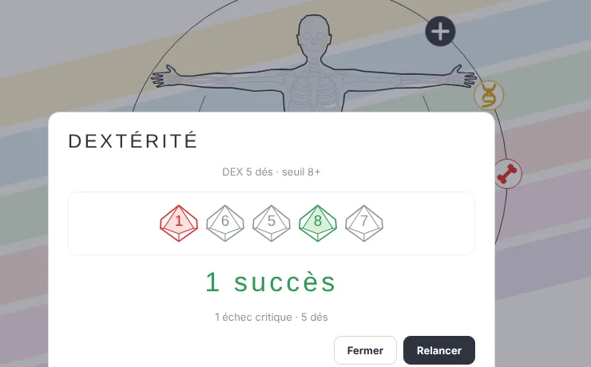
Pour un jet hors statistique (« lance 4 dés, seuil 7 »), ouvrez le volet Jet libre : réglez le nombre de dés et le seuil avec − et +, puis Lancer. Les derniers jets restent listés en dessous, avec l'heure, pour vérifier en cas de doute.
Quand vous êtes connecté à une table, chaque jet part aussi chez le maître du destin et s'affiche en bulle au-dessus de votre jeton, pour tout le monde.
Journal, banque et carte
Le Journal est votre carnet de notes de partie. « Ajouter une entrée », et vous notez le nom du marchand, l'indice trouvé dans la cave, l'adresse du contact. Les entrées se gardent avec la fiche, d'une séance à l'autre.
La Quantum Bank est un coffre-fort. On y met deux choses :
- des Bastos : depuis le compteur de Bastos en haut de l'écran, « Épargner » les dépose ; dans la banque, « Retirer » les rend au portefeuille. L'argent à la banque ne se perd pas si on vous détrousse.
- des objets : glissés depuis l'inventaire sur l'icône du coffre. Au coffre, ils ne pèsent plus sur votre charge. L'icône de l'inventaire, dans la banque, permet de les reprendre.
La Map affiche la carte du monde d'Aldebaran, avec un lien pour l'ouvrir en plein écran et s'y promener.
La table
L'onglet Table vous relie au maître du destin. Il vous donne un code de cinq lettres : tapez-le, « Rejoindre », et c'est tout. Il peut aussi vous envoyer un lien ou vous montrer un QR code, qui font la même chose sans rien taper. L'en-tête affiche l'étape en cours (1/3, 2/3, 3/3), puis le code en vert une fois connecté.
Votre fiche part chez le maître du destin et reste à jour en direct : il voit vos PV, vos statistiques, votre sac. Il ne peut pas la modifier, sauf vos PV quand vous prenez un coup. Vous le verrez alors arriver sur votre fiche.
Ensuite, vous voyez le plateau, avec la caméra centrée sur votre jeton. Tant que le maître du destin ne l'a pas posé sur la carte, l'écran affiche de la neige « NO SIGNAL » : c'est normal, c'est lui qui vous fait entrer en scène.
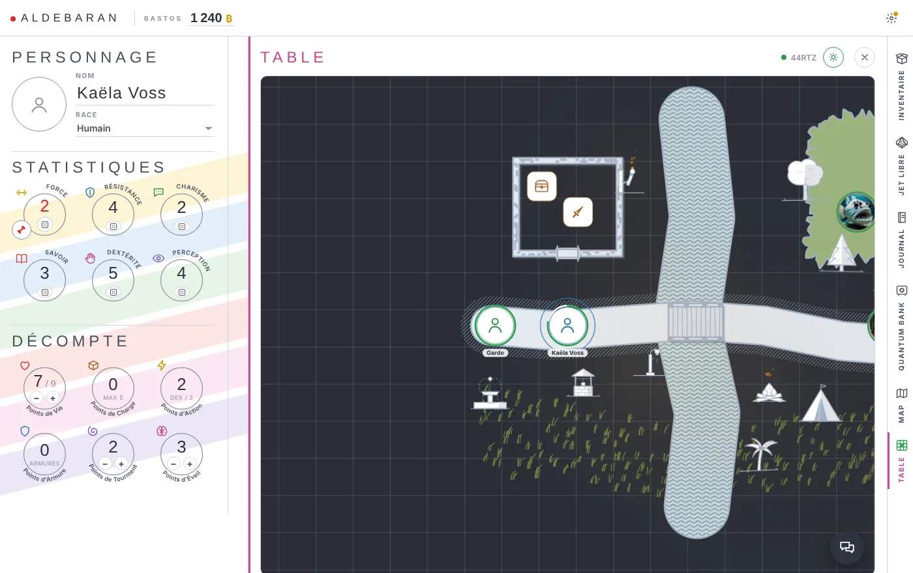
- Montrer quelque chose : cliquez ou glissez sur la carte. Tout le monde voit votre pointeur, à votre couleur. Seul le maître du destin déplace les jetons.
- Parler : le bouton rond en bas à droite ouvre une ligne de texte. Votre message s'affiche en bulle au-dessus de votre jeton, chez tous les joueurs.
- Lire les messages du maître du destin : ils arrivent en bulle en haut de l'écran.
- Pas de veille : le soleil dans l'en-tête empêche l'écran de s'éteindre pendant la partie. Il est vert quand c'est actif, ce qui est le cas par défaut.
- Quitter : la croix. Votre jeton reste sur la carte du maître du destin, votre onglet passe hors ligne.
Si la connexion saute (tunnel, wifi capricieux, téléphone en veille), l'appli se reconnecte toute seule, sans limite, et le maître du destin vous renvoie tout l'état de la partie. Vous ne perdez rien.
Les options Aventurier
Les réglages, en haut à droite (la petite roue).
Sauvegarder son personnage
Votre personnage vit dans un dossier de votre ordinateur. On le choisit une fois (« Enregistrer dans un dossier… »), et l'appli s'en souvient. Dedans : un fichier .adb par personnage, et un fichier catalogue commun où vont tous les objets que vous créez.
- Ctrl+S réécrit la fiche dans son dossier.
- Ctrl+Maj+S enregistre ailleurs, ou sous un autre nom (pratique pour garder une version « avant la grosse bagarre »).
- « Ouvrir un dossier… » liste les personnages qu'il contient : un clic pour reprendre l'un d'eux.
- La sauvegarde automatique se règle dans les Paramètres : toutes les 30 secondes, toutes les minutes… La fiche est aussi gardée dans le navigateur.
Sur Firefox et Safari, qui ne savent pas écrire dans un dossier, l'enregistrement télécharge le fichier .adb à la place.
Les autres réglages
- Empêcher la mise en veille de l'écran : la fiche reste allumée toute la soirée, même posée sur la table. Pendant une partie connectée, le soleil de l'onglet Table s'en occupe déjà.
- Installer : Aldebaran devient une vraie appli, avec son icône sur le bureau ou l'écran d'accueil, et elle s'ouvre même sans Internet. Sur iPhone, c'est dans le menu Partager de Safari, « Sur l'écran d'accueil ».
- Accueil : revenir à l'écran de départ, pour passer côté maître du destin.
- Guide : cette page.
Sur téléphone et tablette
Tout fonctionne aussi au doigt. En portrait, la fiche se lit de haut en bas et les onglets restent sur le bord droit.
En paysage, pendant une partie, l'écran se réorganise pour jouer : la table prend toute la place, et une fiche express s'affiche à gauche, avec vos PV (− et +) et vos six statistiques. Un appui sur une statistique lance le jet. À droite, quelques boutons ouvrent la fiche complète, l'inventaire et le jet libre.
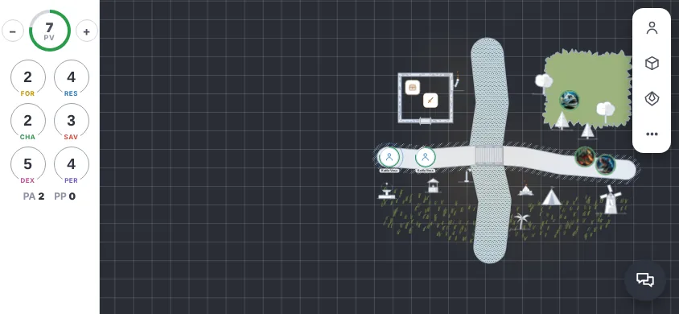
Sur tablette en paysage, la table s'installe au centre, et un sélecteur Corps / Table permet de passer de l'un à l'autre.
Ce que vous pouvez faire Aventurier
Quelques situations de jeu, pas à pas.
Créer un personnage
- Donnez-lui un nom et choisissez sa race. Regardez la bulle de trait qui apparaît autour du corps : elle dit ce que la race apporte.
- Répartissez ses statistiques avec le maître du destin. Les compteurs (PV, charge, action) se calculent tout seuls.
- Ajoutez un portrait : un clic sur le rond, une image, un recadrage.
- Remplissez son sac depuis le Catalogue, en surveillant la charge, et équipez son arme dans ses mains.
- Ctrl+S : choisissez un dossier. Le personnage est à l'abri.
Prendre un coup, se soigner
Quand vous êtes touché, baissez vos PV avec le −, ou laissez faire le maître du destin : s'il change vos PV de son côté, vous le voyez arriver sur votre fiche, avec un petit message.
Si on vous casse un bras, cliquez sur le bras. La Dextérité est divisée par deux, le chiffre passe au rouge, et une bulle « Fracture » rejoint les effets. Le jour où c'est soigné, un second clic sur le bras (ou « Soigner » dans la bulle) rend tout.
Pour un soin, utilisez l'objet : un clic sur son icône dans l'arc Équipement, puis « Utiliser ».
Ouvrir un coffre, prendre un objet
Sur la table, certains objets sont cachés dans un coffre. Cliquez dessus : une bulle « Ouvrir ? » apparaît. Ouvrez-le : l'objet sort du coffre en flottant, dans un halo de lumière, et tout le monde le voit.
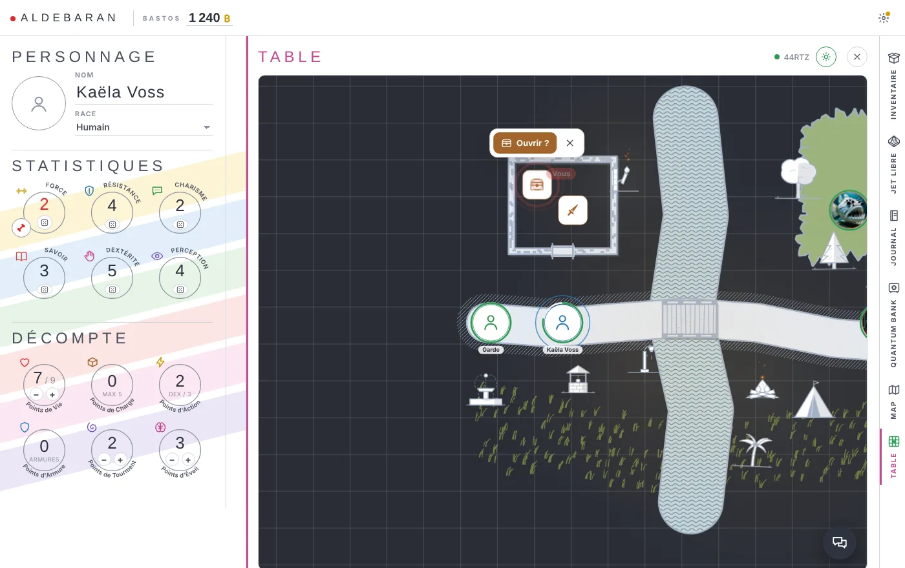
Cliquez ensuite sur l'objet, puis Prendre : il file droit dans votre inventaire et disparaît de la carte. Si votre sac est trop lourd, l'objet tremble en rouge avec « Plus de place » : allégez-vous (un objet au coffre de la Quantum Bank, par exemple), puis réessayez.
Se faire entendre à la table
Trois façons de communiquer, sans quitter la carte :
- Vos jets s'affichent tout seuls en bulle au-dessus de votre jeton : l'icône du dé et votre nombre de réussites avec un trophée, ou un pion quand c'est raté.
- Vos messages : le bouton rond en bas à droite, une phrase, Entrée. Elle s'affiche dans la même bulle.
- Votre pointeur : cliquez sur la carte pour montrer la porte, le coffre, l'ennemi.
Le maître du destin, lui, peut vous écrire en haut de l'écran : à toute la table, ou à vous seul.
Les outils MJ
Le plateau au centre, les outils de création à gauche, la partie en bas.
Le plateau
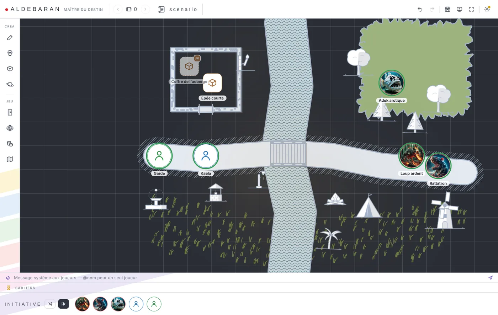
Le plateau est infini et quadrillé. Une case vaut un mètre, la taille d'un jeton : c'est la même échelle partout, pour les dessins, les mesures et les cartes importées.
- Se déplacer : glisser dans le vide avec la souris, ou avec le clic molette. Au doigt, glisser à un doigt.
- Zoomer : la molette, qui zoome vers le curseur ; au doigt, pincer. 0 recentre tout.
- Attirer l'attention : un clic droit sur la carte fait pulser un signal rouge, que tous les joueurs voient.
La barre du haut. À gauche, les flèches pour passer d'une scène à l'autre, le compteur de scènes et le bouton scénario. À droite : annuler et rétablir, la table en ligne (pour connecter les joueurs), la vue joueur (une fenêtre pour un second écran), le plein écran, et les paramètres.
La colonne de gauche se lit en deux groupes. CRÉA, pour fabriquer la scène : Dessin, MOBs, Items, Fond. JEU, pour la mener : Notes, Jet libre, Butin, Map. Chaque bouton ouvre un volet qui glisse sous la colonne ; Échap le referme.
Dessin D
Le volet Dessin est votre boîte à crayons. Tout en haut, quatre outils de base : la Main (pour déplacer la vue sans rien dessiner), la Mesure M (on tire une ligne, la distance s'affiche en mètres, et les joueurs la voient aussi), la Gomme (on passe sur un tracé pour l'effacer) et « Tout effacer ». Juste dessous, la largeur du prochain tracé, en mètres.
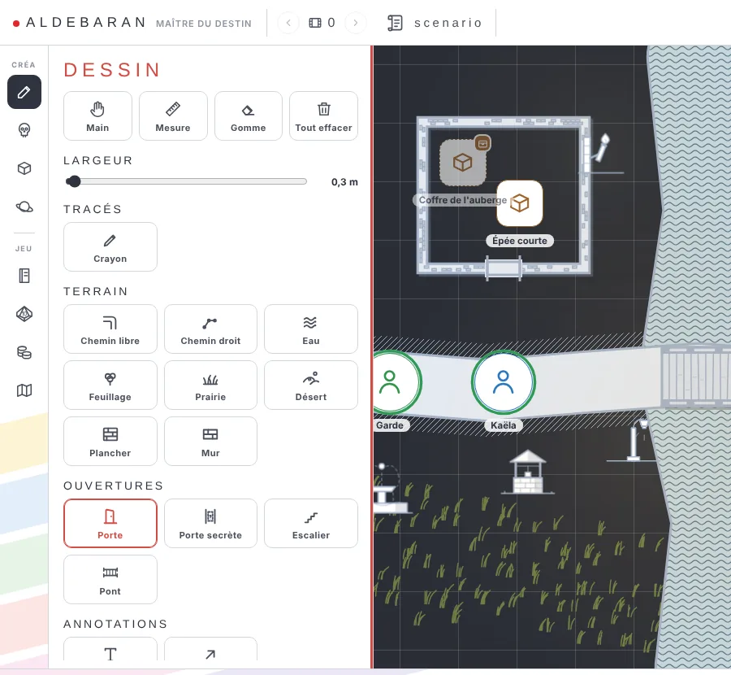
Terrain. On peint à main levée, d'un seul geste :
- Chemin libre suit votre main ; Chemin droit pose des segments clic par clic. Un chemin fait de 1 à 5 mètres de large.
- Eau pour les rivières et les lacs (avec ses vaguelettes), Feuillage pour les forêts, Prairie et Désert pour les étendues.
- Plancher pour les intérieurs, Mur pour les cloisons : les murs se posent clic par clic, et un clic sur le dernier point (ou Entrée) les termine.
Ouvertures. Porte, porte secrète, escalier et pont : on les tire d'un bord à l'autre, ils prennent la bonne orientation tout seuls. Annotations : du texte libre et des flèches, pour noter un nom de lieu ou montrer un chemin.
Les pictos. Plus bas, plus d'une centaine de dessins rangés par famille : bâtiments (église, moulin, auberge, tente…), moderne (immeubles, usine, éolienne…), nature, architecture (statues, fontaine, banc…) et lumières. Un clic pour en choisir un, un clic sur la carte pour le poser. Ensuite, un picto se comporte comme un jeton : on le déplace, on l'agrandit, on le retire. Certains sont vivants : les arbres bougent un peu, les moulins et les éoliennes tournent, la fontaine coule, et les feux crachent des braises.
MOBs J
Les MOBs, ce sont les monstres et les créatures. Le volet a trois onglets.
Sur le plateau liste tout ce qui vit dans la scène, en trois chapitres : joueurs, PNJ, MOBs, avec leurs PV. Un clic sur une ligne centre la carte sur le jeton et le fait clignoter ; l'œil le cache aux joueurs ; la corbeille le retire. La barre de recherche filtre par nom.
Le Bestiaire contient toutes les créatures du livre d'Aldebaran, avec leurs statistiques, leurs PV et leur image. Elles sont rangées de la plus anodine à la plus terrible :
Les chapitres sont repliés au départ : un clic sur leur titre les ouvre. Pour invoquer une créature, glissez-la sur la carte à l'endroit voulu ; un simple clic ouvre sa fiche pour l'ajuster avant.
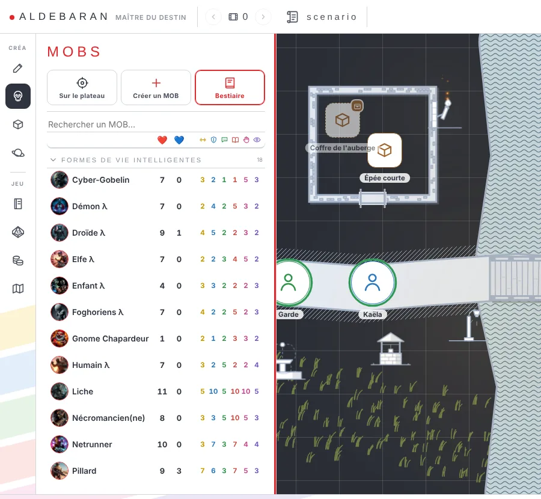
Créer un MOB ouvre une fiche vierge : nom, image ou pictogramme, les six statistiques, PV, points d'armure et d'action, attaques, notes. « Enregistrer au bestiaire » le garde pour vos prochaines séances, à côté de ceux du livre.
La fiche d'un jeton
Un clic sur n'importe quel jeton (MOB, PNJ, joueur) ouvre sa petite fiche flottante, à côté de lui :
- les PV, avec − et + : la barre se vide et change de couleur. Pour un joueur connecté, le changement part directement sur sa fiche ;
- les six statistiques : un clic sur l'une d'elles lance les dés pour le MOB ;
- les points d'armure, d'action et de tourment, et les notes (pouvoirs, faiblesses, ce que vous voulez retenir) ;
- en haut, l'œil le cache aux joueurs, le crayon ouvre la fiche complète ;
- en bas, la taille du jeton, en mètres, et « Retirer ».
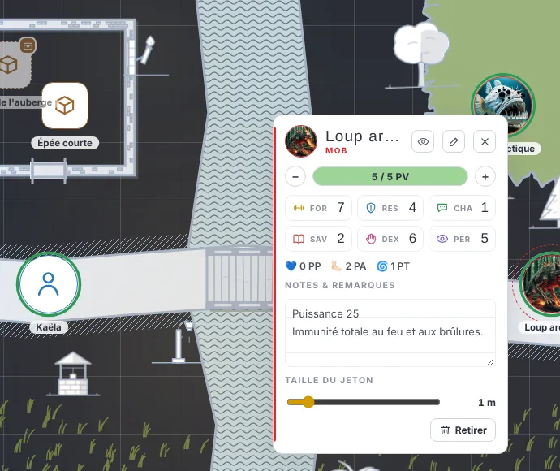
Pour déplacer un jeton, on le glisse ; pendant le glisser, une corbeille apparaît en bas à droite pour le retirer d'un geste. Maj+molette au-dessus d'un jeton l'agrandit ou le réduit.
Items I
Le même principe que les MOBs, pour les objets à trouver.
- Sur le plateau : les objets posés dans la scène, rangés par famille, avec pour chacun la case « dans un contenant », l'œil et la corbeille.
- Inventaire : tout le catalogue de l'appli joueur (près de 200 objets), plus les objets trouvés sur les fiches de vos joueurs, classés par famille : corps à corps, armes à feu, armes à énergie, habits et armures, soins, drogues, divers, sacs, cyber. Glissez un objet sur la carte pour le déposer.
- Créer un item : un nom, une icône (une grille d'icônes par famille, ou votre image), la taille du jeton et une description (effets, dégâts, poids, prix).
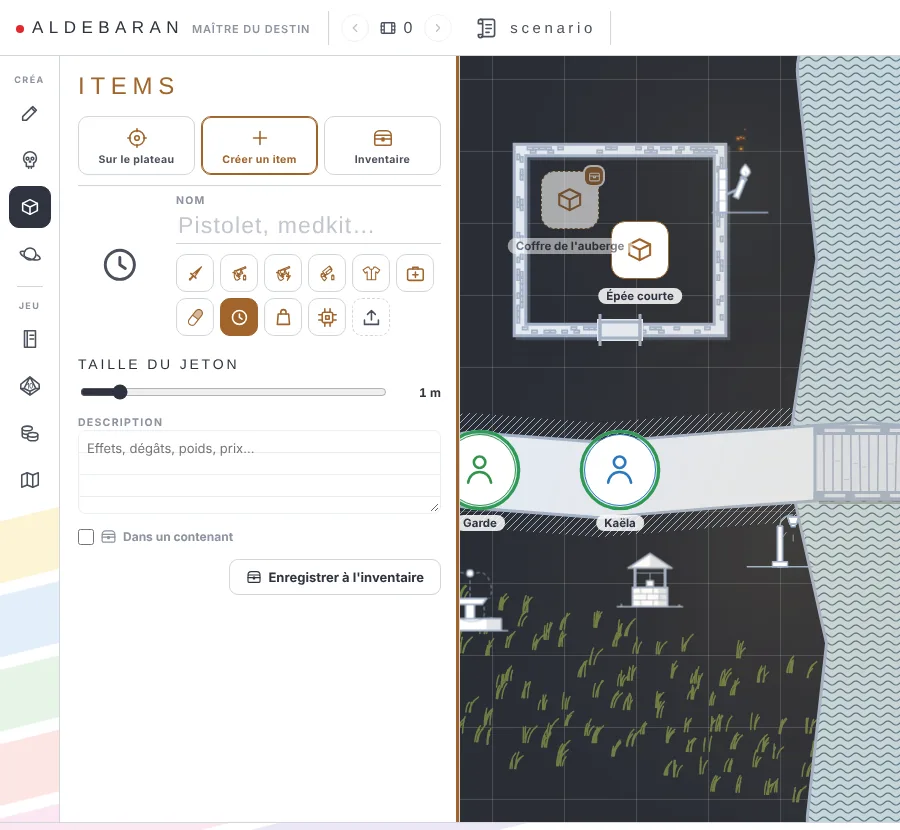
La case Dans un contenant change tout : aux yeux des joueurs, l'objet devient un coffre fermé. Vous, vous voyez toujours ce qu'il y a dedans.
Fond de carte F
Le volet Fond règle ce qu'il y a sous vos dessins.
- Fond : la couleur unie bleu-gris (le fond par défaut, le plus reposant pour dessiner), ou une texture : parchemin, herbe, sable, terre.
- Ambiance : le premier bouton bascule entre Jour et Nuit (le brouillard de guerre, voir plus bas). Les autres règlent la météo : beau temps, pluie, orage, qui s'animent aussi chez les joueurs.
- Plateau : afficher ou cacher la grille, recentrer la vue.
- Image : une carte toute faite du catalogue, ou la vôtre : « Importer », ou glissez simplement une image dans le volet. Elle se cale à l'échelle d'un mètre par case.
- Orthophoto : tapez un lieu réel (une ville, une adresse, des coordonnées), et la vue aérienne devient votre carte, à la bonne échelle. Idéal pour un scénario contemporain.
Le groupe JEU
Les outils de la partie elle-même, dans le bas de la colonne de gauche :
- Notes MJ : votre carnet secret, sur une feuille lignée. Les noms à retenir, ce que sait le passeur, ce qu'il y a dans la cave. Les joueurs ne le voient jamais, et il est enregistré avec la campagne.
- Jet libre : un jet rapide quand vous en avez besoin, nombre de dés et seuil, avec l'historique des derniers jets.
- Butin : vos joueurs fouillent un endroit ? Choisissez sa richesse (désertique, pauvre, moyen, cossu, riche, blindé), puis Fouiller. Dix lignes de trouvailles sortent d'un coup : des Bastos, des objets communs, remarquables, rares ou convoités, ou rien du tout. À vous de raconter.
- Map : la carte du monde, la même que celle des joueurs.
Message, sabliers, initiative
Le bandeau du bas sert pendant la partie, de haut en bas.
Le message système. Tapez une phrase, Entrée : elle s'affiche dans une bulle en haut de l'écran de tous vos joueurs. Commencez par @ suivi du nom d'un joueur (« @Kaëla tu entends un craquement ») pour qu'il soit le seul à le lire. Les débuts de nom suffisent.
Les sabliers. « Nouveau sablier » : un nom (« Renforts », « Effondrement ») et une durée en minutes. Le compte à rebours s'affiche en bas, et chez les joueurs. Un clic sur sa pastille le met en pause ou le supprime.
L'initiative. Joueurs et MOBs y entrent tout seuls dès qu'ils sont posés sur la carte, en pastilles avec leur portrait. Mélanger tire l'ordre au hasard, Tour suivant (ou Espace) passe au suivant : son jeton est cerclé d'or sur la carte. Glissez une pastille pour changer l'ordre ; un clic dessus centre la carte sur le jeton.
Le scénario
Une séance se découpe en scènes : le gué, l'auberge, la forêt. Le bouton scénario, en haut, ouvre la liste. Une scène retient tout : le fond, le jour ou la nuit, la météo, les tracés, les MOBs, les objets, les lumières, et la place des joueurs.
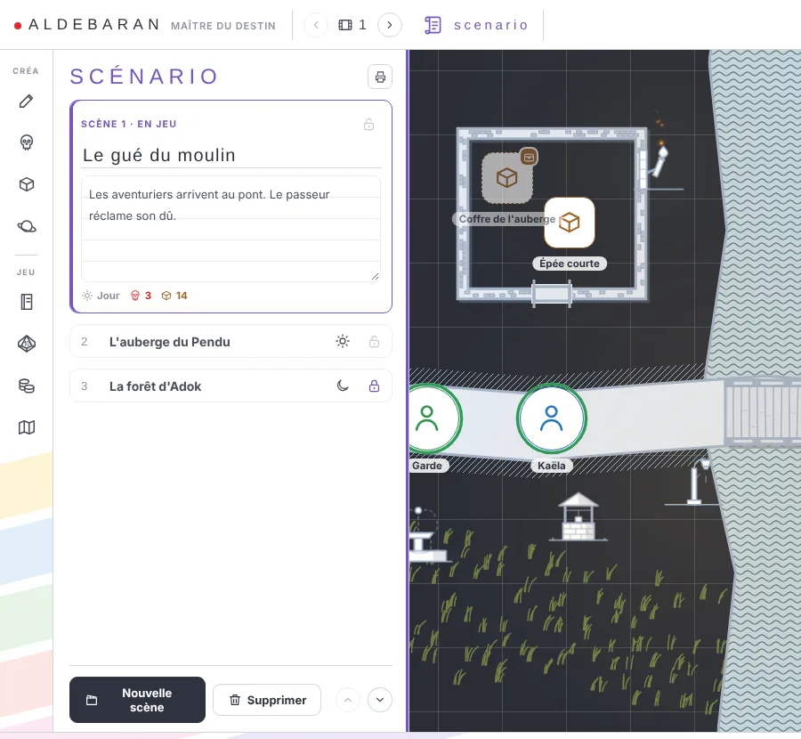
- Nouvelle scène propose deux départs : à partir de la carte actuelle (pour une variante, la même auberge en feu), ou d'une page vierge.
- Chaque scène a un titre et un texte : votre résumé, vos répliques, ce qui doit arriver. Sous le texte, un petit récapitulatif : jour ou nuit, nombre de MOBs, de jetons.
- On passe de l'une à l'autre avec les flèches de la barre du haut, ou en cliquant dans la liste. Le titre de la nouvelle scène s'affiche chez les joueurs. Leurs jetons suivent : ceux de la scène quittée retournent dans leurs onglets, ceux de la nouvelle reprennent leur place.
- Le cadenas verrouille une scène terminée : vous pouvez ensuite vider le plateau, elle ne sera plus modifiée. Un clic la déverrouille si vous devez y revenir.
- L'export PDF met tout le scénario sur papier, pour le relire ou le préparer à l'avance.
Les options MJ
Ce qui se règle une fois pour toutes.
Paramètres
La sauvegarde. Votre campagne, avec toutes ses scènes, son bestiaire et vos notes, tient dans un seul fichier, campagne.adb. Il se range dans le même dossier que les fiches de vos aventuriers : si vous avez déjà choisi un dossier côté Aventurier, il est repris tel quel.
- Ctrl+S enregistre, Ctrl+Maj+S choisit un autre dossier ou un autre nom (une campagne par fichier, si vous en menez plusieurs).
- « Ouvrir une campagne… » liste celles du dossier.
- La sauvegarde automatique (toutes les 30 s, 1 min, 2 min, 5 min) garde la campagne dans le navigateur et la réécrit dans le dossier. Le petit point sous les boutons dit si tout est enregistré.
Le reste. Empêcher la mise en veille de l'écran ; Partie locale, le petit serveur pour jouer sur le même wifi (voir Jouer ensemble) ; Installer l'appli ; et Effacer la campagne en cours, qui remet la table à zéro après confirmation, sans toucher au fichier enregistré.
Raccourcis clavier
Sur tablette
Sur une tablette, la table passe en mode tactile : boutons plus grands, scènes et réglages dans des barres flottantes, zoom en bas à droite. On se déplace à un doigt et on pince pour zoomer. Sur un téléphone en paysage, la même table tient dans l'écran, avec des volets qui se replient.
Ce que vous pouvez faire MJ
Des recettes pour vos prochaines séances.
Dessiner une carte en cinq minutes
- D pour ouvrir le Dessin. Choisissez Eau, une largeur de 2 m, et tracez la rivière d'un seul geste, d'un bord à l'autre.
- Chemin libre, 1 m, pour la route qui la traverse ; puis Pont, tiré d'une rive à l'autre.
- Mur, clic par clic, pour l'auberge ; un clic sur le dernier point la ferme. Posez une Porte sur un des murs.
- Feuillage en quelques coups de pinceau pour la forêt, puis quelques arbres dans les pictos par-dessus.
- Un puits, une tente, un moulin pour la vie du lieu. Échap : c'est prêt.
Un raté ? Ctrl+Z, ou la flèche « annuler » en haut. La gomme efface un tracé précis.
Peupler la scène
J, onglet Bestiaire. Ouvrez le chapitre qui convient au danger du moment (des Prédateurs pour une embuscade, un Colosse pour finir la séance), et glissez les créatures sur la carte. Elles arrivent avec leurs statistiques et leurs PV, et entrent dans l'initiative. Pour un PNJ (le passeur, l'aubergiste), « Créer un MOB » suffit : donnez-lui un nom, quelques statistiques, et gardez-le au bestiaire s'il doit revenir.
Vous préparez une surprise ? L'œil, dans la fiche du jeton ou dans la liste, le cache aux joueurs jusqu'au bon moment.
Cacher un trésor dans un coffre
- I, onglet Inventaire : trouvez l'objet (ou créez-le dans « Créer un item »), et glissez-le dans la pièce.
- Dans « Sur le plateau », cochez Dans un contenant.
- Vos joueurs ne voient qu'un coffre fermé. Quand l'un d'eux l'ouvre, vous êtes prévenu, et l'objet apparaît pour tout le monde.
- S'il le prend, l'objet disparaît de la carte et rejoint son inventaire, avec son poids et ses dés.
Une scène de nuit
Dans Fond de carte, passez en Nuit. Le brouillard de guerre couvre alors toute la carte, sauf autour des joueurs (chacun voit à quelques mètres) et des sources de lumière. Vous, vous voyez à travers, pour tout garder en main. Un MOB tapi dans le noir devient un « ? » dans l'initiative des joueurs : ils savent que quelque chose bouge, pas quoi.
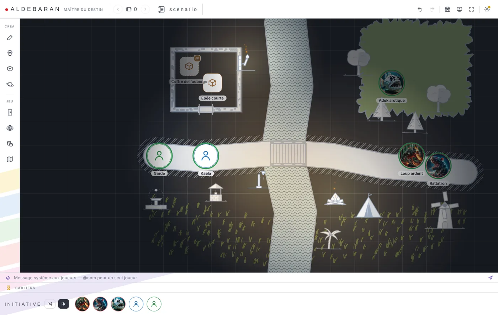
Les pictos de la famille Lumières percent le brouillard : torche, bougies, candélabre, brasero, feu de camp, lanterne, lustre, lampadaire, réverbère, projecteur, enseigne au néon, feu tricolore, lampions, guirlande, lucioles, cristal, et le phare. Les feux naturels vacillent ; le phare, lui, balaie la nuit d'un faisceau tournant.
Un clic sur une lumière ouvre ses réglages : Allumé / Éteint / Cassé (une lumière cassée clignote et éclaire moins), la couleur sur un spectre (avec « Origine » pour revenir à sa couleur d'origine), et la taille du halo, en mètres.
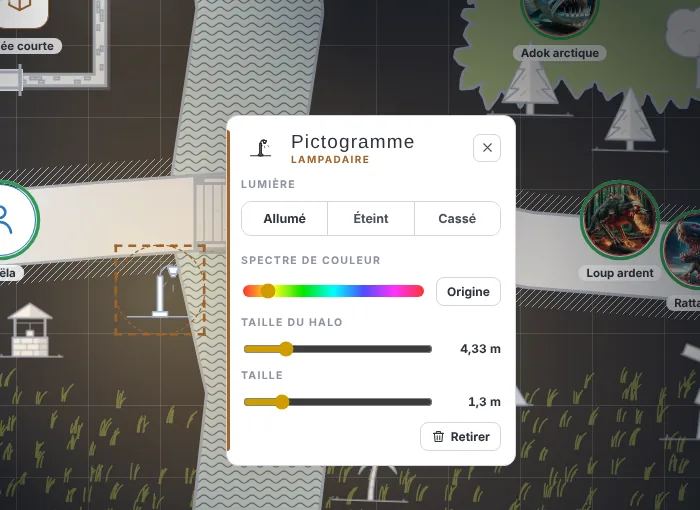
Mener un combat
- Posez les MOBs : ils entrent dans l'initiative, à côté des joueurs.
- Mélanger pour tirer l'ordre, puis Espace à chaque tour. Le jeton actif est cerclé d'or chez tout le monde.
- Les joueurs lancent depuis leur fiche : leurs réussites s'affichent en bulle au-dessus de leur jeton. Pour un MOB, un clic sur sa statistique dans sa fiche.
- Les dégâts se règlent avec les − de la fiche du jeton. Pour un joueur, le changement part sur sa fiche.
- Besoin de pression ? Un sablier de 3 minutes avant l'arrivée des renforts, visible de tous.
Un deuxième écran pour la table
Vous jouez autour d'une table avec une télé ou un second écran ? Le bouton vue joueur ouvre une seconde fenêtre : glissez-la sur l'écran des joueurs et mettez-la en plein écran. Elle suit votre caméra, les jetons, les tracés, la mesure, les signaux et le brouillard, mais rien de vos outils, de vos notes ni des jetons cachés.
En ligne À distance
Ouvrir la table
Côté maître du destin : le bouton table en ligne, en haut à droite, puis « Ouvrir la table ». Un code de cinq lettres s'affiche en grand. C'est le même d'une séance à l'autre : vos joueurs peuvent le noter une fois pour toutes. La même fenêtre donne un lien à copier et un QR code à scanner. « Nouveau code » en change si besoin (les joueurs connectés devront alors reprendre le nouveau).
Côté joueur : l'onglet Table de la fiche, le code, « Rejoindre ». Ou plus simple : cliquer le lien, ou scanner le QR code avec le téléphone. Ça ouvre directement la fiche, déjà connectée.
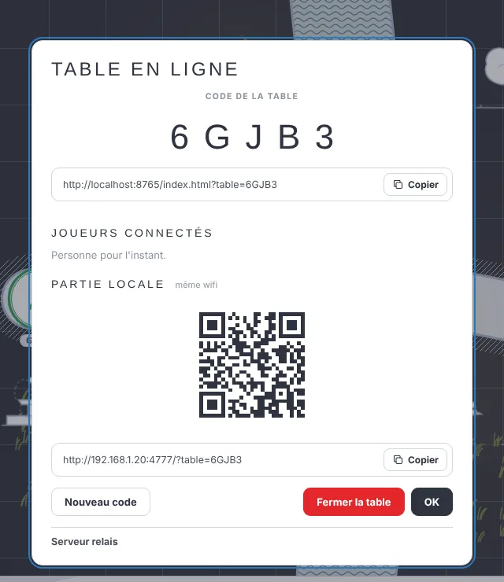
La connexion se fait d'appareil à appareil. Rien n'est stocké sur un serveur : Internet sert seulement à se trouver.
Accueillir les joueurs
Chaque joueur connecté apparaît dans un onglet, au-dessus du bandeau bas, avec son portrait et un point vert. Son jeton n'arrive pas tout seul sur la carte : glissez-le depuis l'onglet à l'endroit voulu. C'est vous qui décidez quand il entre en scène ; d'ici là, il voit la neige « NO SIGNAL ».
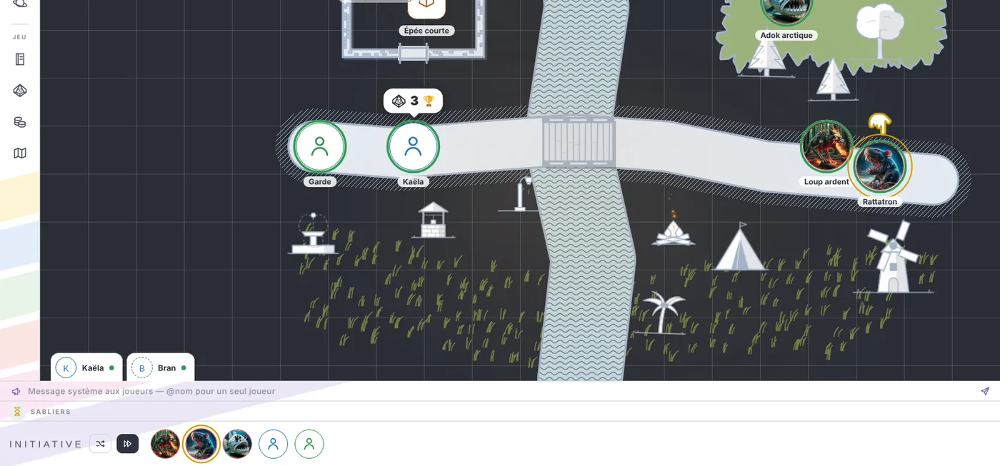
Un clic sur l'onglet ouvre sa fiche, telle qu'il la voit, à jour en direct. Vous la consultez sans pouvoir la modifier : c'est le joueur qui tient son personnage. Son jeton suit sa fiche (nom, portrait, statistiques, PV), et ses jets s'affichent chez vous.
Si un joueur perd la connexion, son appli se reconnecte d'elle-même, sans limite, et vous lui renvoyez automatiquement tout l'état de la partie. S'il part vraiment, son onglet passe hors ligne puis disparaît au bout de quelques secondes : pas de joueur fantôme.
Partie locale Même wifi
Tout le monde dans la même pièce ? Un petit serveur, sur le PC du maître du destin, rend la connexion instantanée et indépendante d'Internet.
Installer le serveur (une fois)
Le serveur ne s'installe que sur le PC Windows du maître du destin. Les joueurs n'installent rien : ils utilisent leur navigateur, comme d'habitude.
- Paramètres › Partie locale › Télécharger le serveur.
- Ouvrez Aldebaran-Serveur.exe dans vos téléchargements. Windows prévient d'abord qu'il ne connaît pas ce programme : « Informations complémentaires », puis « Exécuter quand même ». C'est normal pour un petit logiciel gratuit, et ça n'arrive qu'une fois.
- Le serveur propose de s'installer : répondez Oui. Il se range dans votre dossier utilisateur et crée un raccourci Aldebaran Serveur sur le bureau et dans le menu Démarrer. Vous pouvez ensuite supprimer le fichier téléchargé.
- Le pare-feu demande l'accès au réseau : cochez Réseaux privés et autorisez. Sans ça, les joueurs ne pourraient pas le joindre.
- La page Serveur local s'ouvre dans le navigateur. C'est votre tableau de bord.
Chaque soirée
- Double-cliquez sur Aldebaran Serveur. La page du serveur s'ouvre : elle affiche l'adresse pour les joueurs, un QR code, l'état de votre table et le nombre de joueurs connectés.
- Cliquez sur Ouvrir la table du MJ, et ouvrez la table comme d'habitude (bouton « table en ligne »). La table s'ouvre en ligne et en local en même temps.
- Vos joueurs scannent le QR code, affiché sur la page du serveur ou dans la fenêtre de la table. Ils arrivent directement sur leur fiche, connectés. S'ils scannent avant que la table soit ouverte, ils patientent tout seuls.
Le serveur tourne en arrière-plan. Son icône est près de l'horloge de Windows (parfois cachée derrière la petite flèche ^) : son menu affiche l'adresse et les joueurs connectés, rouvre la page du serveur ou la table, et arrête le serveur. Fermer la page ne l'arrête pas.
- Tant que le serveur tourne, le PC ne se met pas en veille.
- Si le serveur est coupé puis relancé en pleine partie, tout le monde se reconnecte tout seul en quelques secondes.
- Sans Internet, tout fonctionne quand même : seule la partie locale est ouverte.
- Des joueurs à distance peuvent rejoindre avec le code, en même temps que ceux du salon.